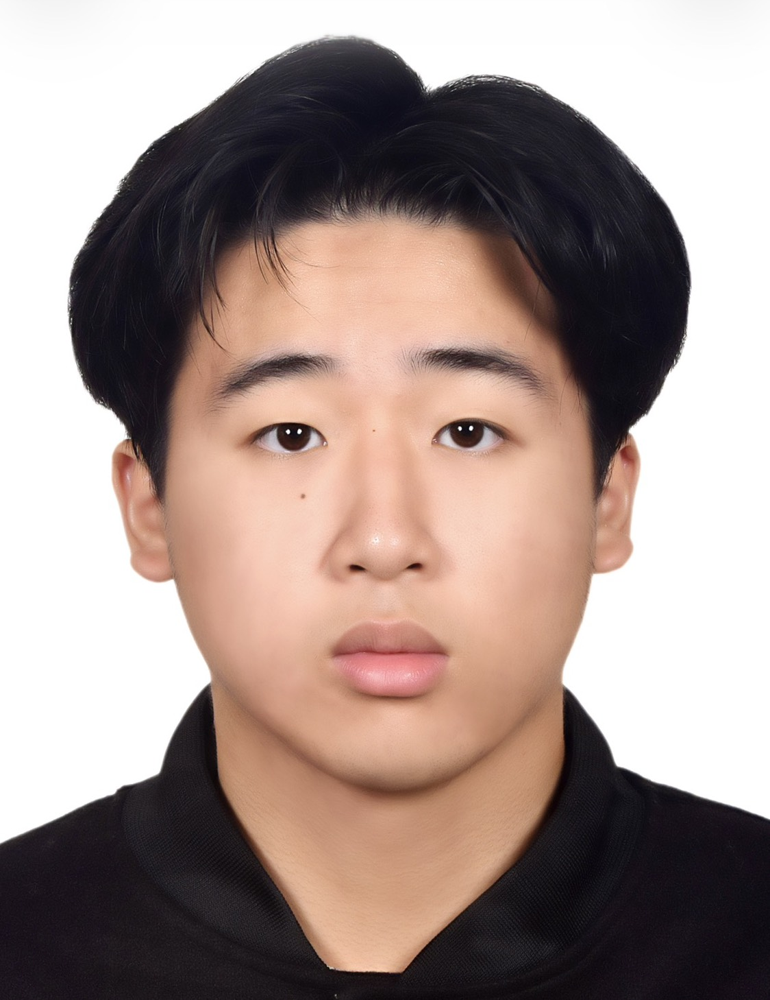

新北市私立高職｜廣告設計科
學習平面設計、視覺傳達、插畫及相關設計實務。
個人履歷・PERSONAL RESUME
致理科技大學一年級｜視覺設計・插畫・影像創作

目前就讀致理科技大學一年級，過去在高中職廣告設計科接受設計相關訓練，對視覺設計、插畫與影像創作保持興趣。個性較安靜、做事細心，習慣反覆思考作品細節，也願意主動學習新知識、接受不同挑戰。期望在大學期間持續累積專業能力，拓展創作視野，並將所學運用在實際作品中。
學習平面設計、視覺傳達、插畫及相關設計實務。
參與「菇毒」系列專題，負責發想整理、進度規劃與簡報製作，將有毒菇類意象結合情感溝通議題。
持續參與競賽並調整創作方向，從技法練習逐步轉向作品主題與情感表達。
透過一年準備與練習，取得丙級技術士證照。
協助班級活動與環境整潔管理，練習溝通協調、分工合作及責任分配。
與社團夥伴及學長姐共同籌備展覽，累積團隊合作與活動執行經驗。
希望在大學期間持續精進設計與數位媒體相關能力，累積實作經驗，並透過課程與專題探索未來發展方向。